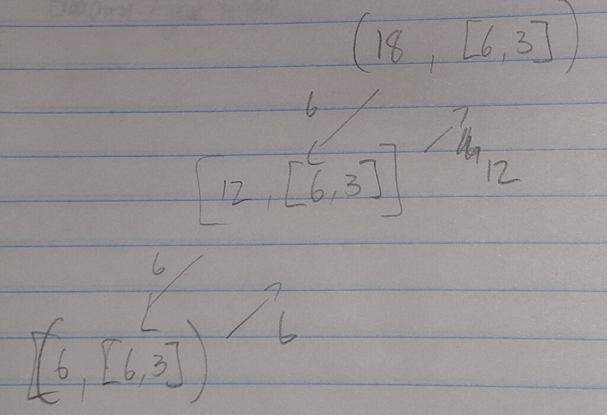

For a job interview, I was required to solve for the following problem: a
customer orders a certain number of koolaid bottles. These bottles come in
cartons that have specific sizes. Our deliveries can make use of any
number of these cartons and the goal is to deliver the order either:
completely, using the available carton sizes or as close to but less than
the order order using the carton sizes provided
This reminded me of the coin problem - given coins of various
denominations, determine whether you can make up a given total (and to
extend the problem: find the least number of coins required to do so).
Implementation
The first requirement would be to discard any invalid totals: negative
numbers, 0 or any number less than the lowest denomination of coin.
Similarly, all coin denominations needed to be natural numbers.
if not ((order >= 1) and (isinstance(order, int))):
return "Invalid order size"
if not (all(isinstance(item, int) for item in avail_carts)):
return "Carton size must be a whole number"
if not (min(avail_carts) >= 0):
return "Invalid carton sizes"
if order <= min(avail_carts):
return min(avail_carts)
These exceptions ensure that the inputs to our function are correct.
The next step is the actual algorithm. Note that this solution is
incorrect. I dwelled on how to do this problem for a while but kept
thinking of problems in my solutions. I need to choose between checking
the solution online and coming up with my own, incorrect solution. Seeing
as this was for an interview, I did not want to misrepresent my coding
ability and hence opted for the latter option. This, at least, I would be
able to explain in an interview if asked about my decisions (rather than
just taking someone else's correct work).
Thus I tackled the problem my way and hoped this would get across how I
thought about the problem. I envisioned a matrix where all the possible
multiples of the various carton sizes would be included. For instance, if
our order size was 24 and our carton sizes were 3 and 2, then the matrix
produced would be
This kind of array manipulation took a long time - my main coding
background has been in Matlab. Although numpy in Python is fairly similar,
that fact took me a while to find out and a lot of context-switching
needed to take place (after discussion with my more computer-science
inclined brother, I was informed that I was 'shaving yaks').
My vision for the program would be that the algorithm would be able to
select a single number from each row (or 0) and sum combinations of these
to find either the order number or the highest possible combination of
carton multiples.
The issue with this algorithm was that
I did not know how to implement the 'choosing' bit and the 'highest
possible combination' bit involved an optimization problem, which I also
did not know how to do
Unfortunately I was strained for time for the submission and needed to
come up with the best alternative. For me, that was order the matrix from
the highest carton size to the lowest. Then to iterate through the matrix,
either selecting the highest multiple from the row (and adding this to the
total) or moving to the next row and doing the same. This solution was
okay - it would work well for when orders were perfect multiples of one of
the carton sizes. It would also work if the order could be comprised of
mostly carton of the largest size (as the highest number of these would be
selected first.) Unfortunately it did not allow for any kind of real
nuance - i.e. if the order could be achieved by being made up of 1 carton
of the largest denomination and 3 cartons of the smallest denomination -
this would not work.
This algorithm is what I submitted. Again, it was not correct, but I
deemed it more important to get across how I approached the problem rather
than getting the right answer at all costs.
Second Chance
One of the developers at the hiring company got back to me, saying that
they liked my code and wanted to give me a second shot at completing the
problem. They also requested that I implement some testing of the function
(rather than the rudimentary print(MY_ANSWER) I was using.
The implementation of the tests looked like the following:
I then needed to embark on the issue at hand: submitting the correct
answer this time. I figured my thinking needed a bit of a shift and hence
tackled the problem diagrammatically. I drew out a couple of scenarios and
how I wanted my algorithm to step through the problem to get to the
solution.

Algorithm is supplied with 18 as an order and 6 and 3 as carton sizes.
The above would see that 18 is larger than the largest size of carton and
so would evaluate the function with 12 as the order size (order -
max(carton_list)). Still, order > max(carton_list) so the step is
repeated. Now, order = carton_list[0] and so we can return that carton
size. This repeats all the way up, with the carton sizes being added back
along the way, until 18 is returned to the function (i.e. the complete
order size can be fulfilled using three cartons of size 6 each.
I realised immediately that I had drawn out the bane of my first-year
computer science existence: a recursive function. Once I got over my
initial fear, however, I found the solution to come rather easily. One big
factor in this was being able to do away with numpy and just use lists, so
the notational context switching was reduced a lot. I simply implemented
for increasingly difficult cases: when the order cannot be made up
perfectly, when the order can be made perfectly but the smaller carton
denomination needs to be used, when multiple of the smaller cartons need
to be used and so on, progressively adding new cases.
By iteratively adding to the complexity of the algorithm, I found my code
to become far more clean and simple. Past redundancies were removed as I
needed to generalise to broader cases. The final solution looked as
follows:
def num_koolaids(order, avail_carts):
avail_carts.sort(reverse=True)
if order == avail_carts[0]:
return avail_carts[0]
if order > avail_carts[0]:
return avail_carts[0] + num_koolaids(order-avail_carts[0], avail_carts)
else:
if len(avail_carts) == 1:
return 0
else:
return num_koolaids(order + avail_carts[0], avail_carts[1:]) - avail_carts[0]
Essentially, the algorithm executed as follows:
> Sort the list of cartons into descending order
> Check if the order matches the largest denomination size: if so, return
that denomination size
> If the order was greater than the largest denomination, call the function
again but with the new 'order' being the current order size less the
largest cart denomination
> If the order size is less than the largest carton denomination, the
function is called using the second-largest carton denomination
> If none of this is possible (i.e. We are down to our final carton
denomination), return 0
This solution worked reliably for inputs and answers given.
Lessons learned.
> Diagrams are very useful for visualising how an algorithm should work
(Particularly for recursive formulas)
> Always implement testing from the very beginning
> It is effective to solve for smaller problems and iterate your
solution, adding complexity each time